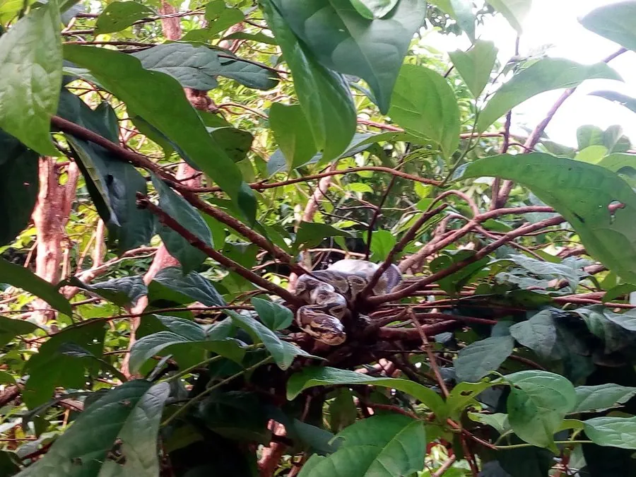

爬行动物 · 动物界
球蟒 Python regius

非洲西部的小型蟒蛇，受惊时会把身体卷成圆球保护头部，性格温顺，是宠物蟒市场的常见物种，也常被称为皇家蟒。
- 分类
- 门脊索动物门纲爬行纲目有鳞目科蟒科属蟒属
- 栖息环境
- 非洲西部与中部的稀树草原、灌丛和农田边缘
- 地理分布
- 非洲西部和中部的多个国家
- 保护级别
- IUCN 无危（LC）；CITES 附录 II；非中国原产
物种志
球蟒体长 0.9–1.5 米，雌性通常大于雄性，身体粗壮，头颈分界明显，体色以黄褐或黑褐为底，背部有金黄色的斑纹与条纹，腹部多为乳白色；唇部有热敏感的唇窝，能感知鼠类的体温。它遇到威胁时会把身体紧紧卷成一个球，把头部藏在中间，因此得名“球蟒”。
它分布于非洲西部和中部的稀树草原、灌木丛与农田边缘，多在夜间活动，捕食鼠类和小型鸟类，靠缠绕使猎物窒息后整只吞下。每年雨季前后繁殖，雌蛇产卵 3–11 枚，会盘在卵上孵卵并靠肌肉颤抖产热，孵化期约 55–60 天。球蟒性情温顺、体型适中，是宠物蟒贸易中最常见的物种，人工选育品系繁多；在中国它属于外来物种，饲养者不可随意放生。
形态与习性
- 食性鼠类和小型鸟类
- 体长0.9–1.5 m，雌性较大
- 体重约 1–2.5 kg
- 寿命约 20–30 年
- 繁殖卵生，每窝 3–11 枚，孵化约 55–60 天
- 活动节律夜行性
- 防御受惊时卷成球状，把头部藏在中间
趣味知识
- 球蟒受惊时会卷成一个紧实的圆球，头部藏在正中，这是它名字的由来。
- 雌蟒孵卵时会盘在卵上靠肌肉颤抖产热，帮助卵保持温度。
- 球蟒是宠物蟒贸易中最常见的物种之一，人工选育的色型已有数百种。